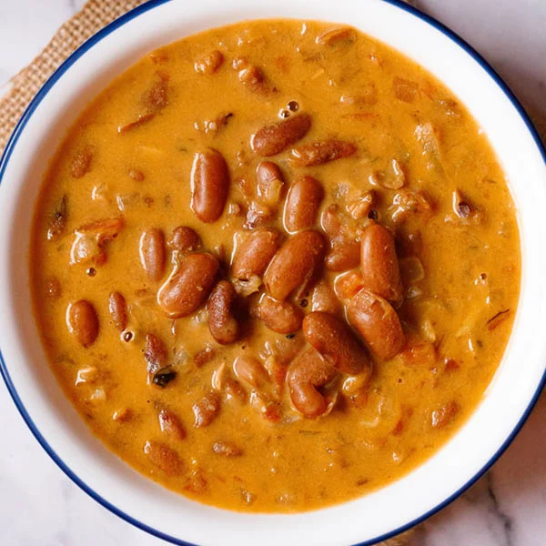

Rajma

Description
Rajma is comfort food at its best. I like rajma best with simple jeera (cumin) rice. Of course, some roti would be great too. When I was in college, I ate rajma at least once a week. Cheap, nutritious, and comforting. What is not to like?
Ingredients
- 1 large onions, 4 garlic cloves,fresh ginger
- 1 teaspoon cumin,turmeric,coriander
- Garam Masala,red pepper,green chilli,salt
- 2 chopped tomatoes,1/4 cilantro leaves chopped
- 2 cups of water
Steps
- Place the kidney beans into a large container and cover with several inches of cool water; let stand 8 hours or overnight. Drain and rinse.
- Grind the onion, ginger, and garlic into a paste using a mortar and pestle.
- Heat the oil and ghee together in a pressure cooker over medium heat. Fry the red chile peppers, cumin seeds, and whole cloves in the hot oil until the cumin seeds begin to splutter
- stir the onion paste into the mixture and cook, stirring frequently, until golden brown.
- Season with the ground turmeric, ground cumin, and ground coriander; continue cooking for a few more seconds before adding the tomatoes. Cook until the tomatoes are completely tender.